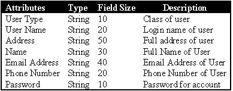

This was a semester-long project from my software engineering class at UNO. The goal of this
project was to create a gas station management software package using the classic waterfall development
lifecycle. Some of the requirements that needed to be met were: the ability to control gas pumps,
keep track of in-store inventory, and provide communication between station employees and the head office
management.
This project was not so much an exercise in programming as it was in software
design documentation. That is to say,
the bulk of this project was a compilation of 5 design documents amassed into a 100+ page folder.
More specifically, this project was separated into 5 phases. What follows is a description of
my role in this team and comprehensive description of each phase (the original MS word .doc file
for each phase is also available in the links below).
My team for this project consisted of three other classmates, only one of whom I knew prior to the
creation of the group, and myself. Our group creation was completely arbitrary; we got to pick
our groupmates.
One of my groupmates was well versed in PHP and MySQL, so he was, early on, placed in charge
of coding the project (which wasn't that much work because it was a prototype). My other two
groupmates and myself were in charge of the documentation.
Leadership of our group was assumed by one of my documentation groupmates, but as the project
began, it became apparent through the grades we were receiving on group assignments that a
change needed to be made. Thus, I assumed leadership by offering be the "central" repository for
our project documents. So, my other two groupmates sent me any documents that they created
and I would go over them, add and remove content, and make suggestions regarding changes that
I felt would improve the project. I also did a substantial amount of work to ensure the quality
in our projects. I would estimate that I created approximately 80% of all diagrams and 60% of the
text in our project. I am quite proud to say, after I took commmand, our project grades raised
substantially from C and D letter grades to B+'s and A's.
As group leader, I attempted to motivate my groupmates by implementing some of the positive strategies
I read in Dale Carnegie's
"How to Win Friends and Influence People."
I believe I was quite successful in my leadership position, as we never experienced in heated arguments
and everyone was willingly a participant in the groupwork. In fact, after the project was over, I
left having made three new and very cool friends. To sweeten the deal, our final project grade was an A
(which may have been the the highest in the class).
This document elaborates on the requirements and specifications for the gas station system with
varying levels of depth to facilitate familiarity with the system. It is focused more indicating what
the system needs to do to fulfill the requirements set forth by the user; that is, it does not focus
on the specific semantic and syntactical methods that will be used to achieve completion and fulfillment
of the user's requirements.
This paper lists out specific functional and non-functional requirements for the gas station
software. Some of the requirements are: required features (add/remove users, items, gas, etc.),
performence (ability to run on standard PC's), and communication (ability to transfer data over TCP/IP).
It also contains multiple ERD diagrams that depict how the system interfaces with its database,
state transition diagrams that describe the clerk and manager systems, and level 0 and 1
data flow diagrams for the clerk and manager systems.
This document analyzes the risks, costs, and time schedules for the completion of the gas station
software package. It identifies all elements that need to be monitored to ensure a satisfactory
completion of the system in a timely manner, and it also touches on the team structure. It points
out resources required, how to manage said resources, what risks are involved, cost estimates,
and quality control implementations. The majority of the data for this documentation was derived
with the aid of the Cocomo II software package.
This document describes the modular structure of the gas station system. It documents all of
the modules, databases, and user interfaces in the system.
The purpose of this document is to provide a brief object-oriented analysis of the gas station system.
It mostly consists of use cases. Each use case is described using sequence diagrams
and state chart diagrams. It also contains a comprehensive class diagram of the system.

A comprehensive class diagram for the project
A diagram from Cocomo II's schedule reporter

A database table from the project
A level 0 data flow diagram
A level 1 data flow diagram

A state transition diagram for the manager module
A comprehensive list of all of the modules in the system and their dependencies
A sequence diagram for a use case
A state chart diagram - corresponds with above sequence diagram

Diagram depicting the team communication for this project (simulated)